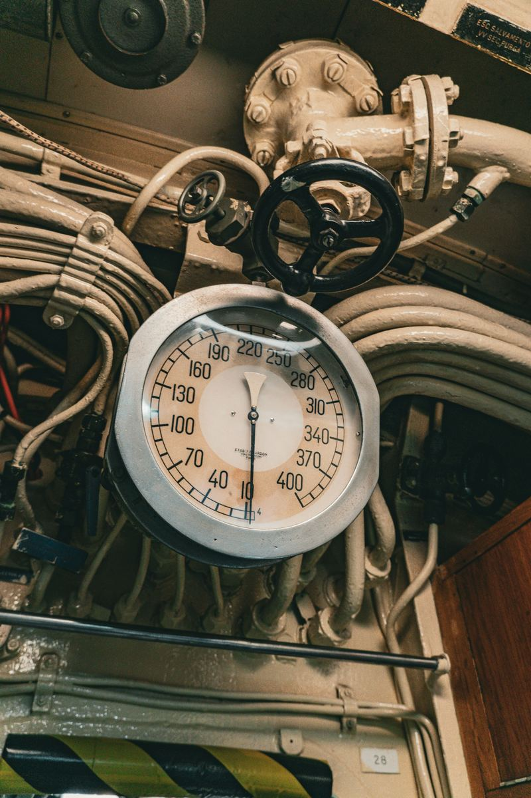
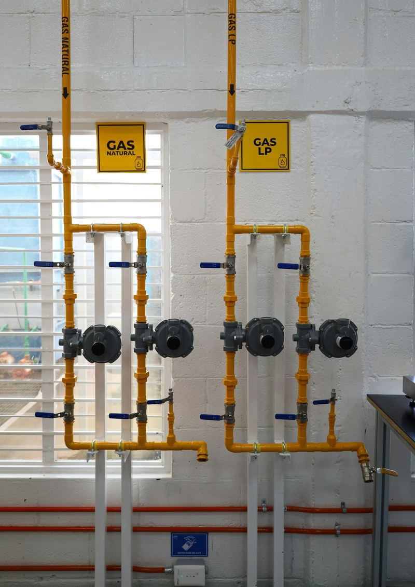
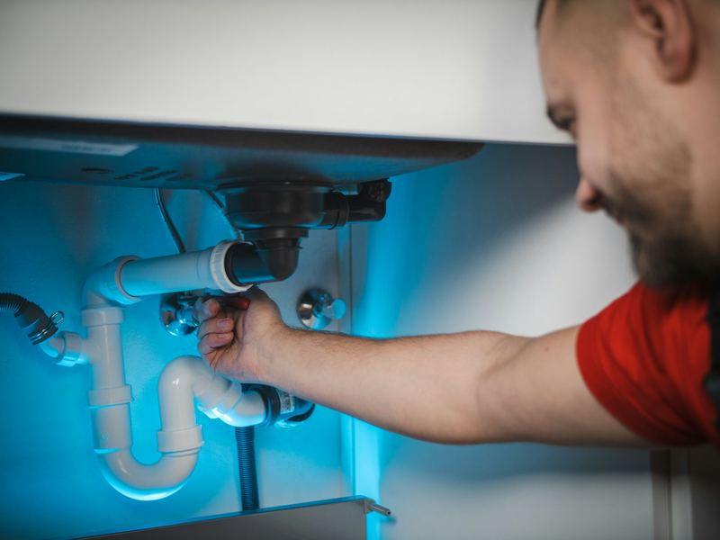

Revize kotlů na tuhá paliva
Opop, Atmos, Attack i kotle bez štítku. Revize, kterou kotel podle zákona potřebuje jednou za tři roky.
Jiří Kašpárek, instalatér a topenář z Lichnova. Revize kotlů na tuhá paliva, montáž kotlů splňujících podmínky kotlíkových dotací, plynové kotle a přípojky.

Kotel na tuhá paliva musí mít aspoň 3. emisní třídu a revizi jednou za tři roky. Vyberte třídu ze štítku a datum poslední revize.
Topení, voda a plyn pro rodinné domy i provozy.

Opop, Atmos, Attack i kotle bez štítku. Revize, kterou kotel podle zákona potřebuje jednou za tři roky.
Instalace plynových kotlů, plynové přípojky, opravy plynovodů.

Montáž kotlů, které splňují podmínky kotlíkových dotací.

Rozvody vody a topení, instalatérské a topenářské práce.
„Profesionálové každým coulem, pět hvězd málo.“
zákazník na Firmy.cz